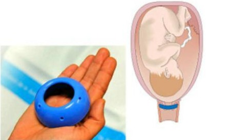

Towards Birth Alert
Un dispositivo clínico diseñado para la detección temprana de nacimientos prematuros
Este dispositivo incluye una sonda extraíble que se conecta tanto a un sistema de medición cervical LIF como uno EIS cervical. Hasta donde sabemos, este es el primer intento de utilizar ambas técnicas en paralelo para la detección del parto prematuro. El objetivo es de una detección más temprana durante las etapas de ablandamiento y maduración cervical, que ocurren durante la Fase I y II del parto. Al adquirir mediciones preliminares de LIF y EIS cervicales, se capturan los cambios temporales en estas señales durante la gestación. La hipótesis es que la tendencia de estas señales en combinación con técnicas de fusión de señales permitirá la detección antes que con el uso de LIF cervical o EIS solo.
A. Sonda intravaginal: Consta de seis electrodos de titanio y un puerto de fibra óptica para la medición de impedancia y fluorescencia, respectivamente. Estas interfaces de sensor están incrustadas dentro de silicona médica de grado implante moldeada en forma de copa diseñada para adaptarse al cuello uterino humano.
B. Sistema de medición de fluorescencia e impedancia: La medición de la impedancia se logró mediante el uso de un detector de fase de ganancia IC cuyos datos se recopilan con una computadora con software personalizado para la adquisición de datos. El mismo software también controla la selección de frecuencia y la selección de electrodos, así como la adquisición de datos a través del sistema de medición de fluorescencia. La luz fluorescente emitida por el tejido cervical se transmite a través de la ventana BK-7 a lo largo de las fibras de emisión del haz de fibra óptica a través de dos filtros de paso de onda larga con frecuencias de 400 nm y 420 nm. La señal de luz resultante es detectada por un espectrómetro de fibra óptica USB.
[1]

Ecografía Transvaginal
Depende de la relación de que un cuello uterino corto se relaciona con la aparición de un parto prematuro. Quizás la mayor limitación es que se basa en el examen de acortamiento macroscópico del cuello uterino. Otras limitaciones incluyen que la adquisición e interpretación de datos depende en gran medida del operador de la máquina de ultrasonido, y la mala resolución de las imágenes de ultrasonido contribuye a la dificultad de interpretación
En qué consiste esta tecnología: Se introduce un instrumento en la vagina que produce ondas de sonido que rebotan en los órganos del interior de la pelvis. Estas ondas de sonido producen ecos que una computadora usa para crear una imagen que se llama ecografía.
[1]

Inmunoensayo de fibronectina fetal
La fibronectina fetal es una proteína que básicamente ayuda a mantener adheridas las membranas fetales al revestimiento del útero. Desde la semana 22 a la 30 si hay niveles bajos de fibronectina fetal quiere decir que no habrá parto prematuro en los siguientes 7 a 10 días. tiene un inconveniente: para predecir que no habrá trabajo de parto en 7 días, tiene un valor predictivo positivo bajo (VPP = 14–19%). debido a que los médicos no pueden estar seguros generalmente se usa esta tecnología para monitorear embarazos de alto riesgo
[1]

Pesario cervical
Anillo de silicona diseñado para mantener el cuello uterino cerrado y para cambiar la inclinación del canal cervical, reduciendo el riesgo de parto prematuro. Brinda un tratamiento de bajo costo, poco invasivo y que no requiere anestesia. Además es sencillo de retirar y colocar.
[2]
QUiPP APP
Esta aplicación fue desarrollada en el Reino Unido y se basa en los siguientes criterios para poder determinar un valor probabilístico: Longitud cervical en mm, cantidad de fibronectina fetal en ng/ml, si es que tuvo antes un parto prematuro, y si éste fue por ruptura de membranas, también considera si es que tiene algún síntoma de un infeccion uterina. Los resultados muestran probabilidades de nacimiento pretérmino antes de las 30, 34 y 37 semanas. Además, probabilidades dentro de 1, 2 y 4 semanas al realizar la consulta. De cierta manera, estas medidas no arrojan un valor muy exacto, por lo que no se debe de utilizar solo esta aplicación para el diagnóstico de parto prematuro, y debe de ir acompañado con otros métodos.
[3]